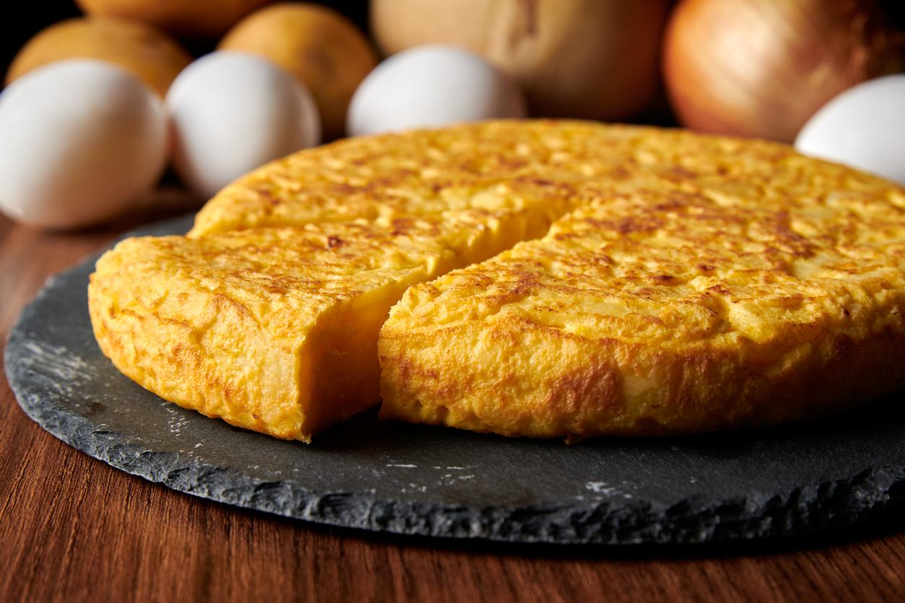

"¿La mejor receta de la cocina española?"
Ingredientes
- 600 gramos de patatas
- 4 huevos grandes
- 1 cebolla
- 50 ml de aceite
Instrucciones
- Lo primero que debemos hacer es preparar las patatas. Para ello elegiremos las patatas que sean más alargadas para que las rodajas tengan un tamaño parecido. Seguidamente, lavamos bien las patatas para quitar todos los restos de tierra que puedan tener.
- A continuación, pelamos las patatas y las cortamos en rodajas, procurando que el grosor sea siempre parecido para que a la hora de cocinarse todas queden iguales de textura.
Por otro lado, pelamos la cebolla y la cortamos en juliana, procurando también que sea un corte regular y fino para ayudar a su cocinado.
- Debemos disponer de un bol o recipiente que sea apto para microondas y, en esa superficie, colocar la patata y la cebolla ya preparada en rodajas. También verteremos las cuatro cucharadas de aceite de oliva y removeremos para que los dos ingredientes se engrasen.
Página principal